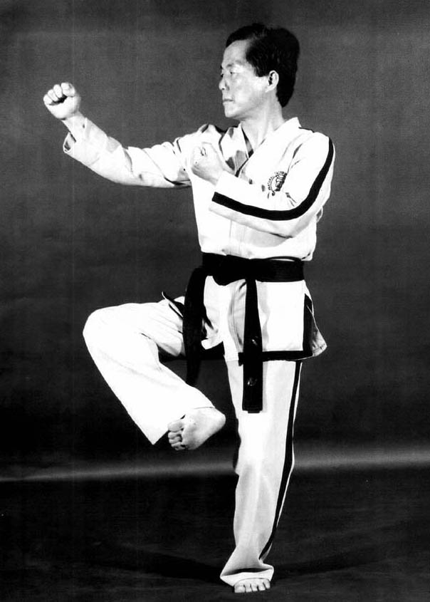

Segun el programa tecnico de la asociacion debera responder las siguientes preguntas.
En el caso de las manos
¿Cuantas mociones existen?
En la mocion conectada se involucran dos tipos de movimientos
¿Cuales?
En una mocion continuada
¿Como es la respiracion?
Segun la siguiente imagen
¿Como se llama la posicion?
¿Como se dice cinturon en coreano?
¿Que significa la palabra KAUNDE?
¿Como se dice rojo en coreano?
¿Que representan los 32 movimientos de la forma Joong-Gun?